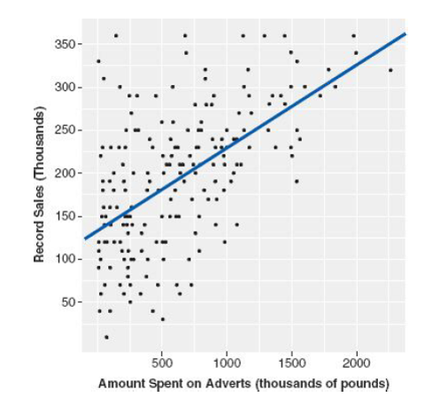
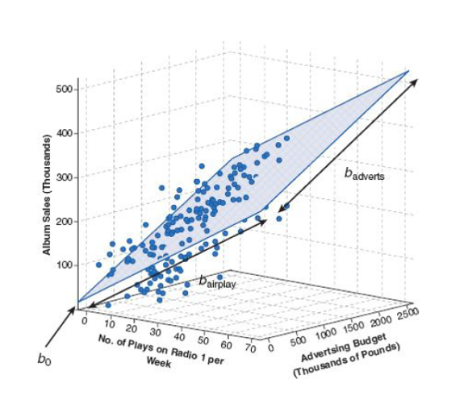
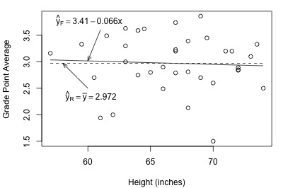
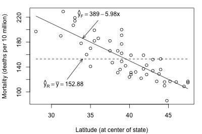

In reality, the effect of one variable rarely takes place in isolation. In multiple regression, we explain the outcome (dependent) variable using a particular predictor after accounting for the effect of other predictors (independent variables) included in the model.
Multiple linear regression provides an adjusted estimate for the effect of a specific predictor, which can be different from simply applying linear regression with one predictor multiple times.
Cautionary note: each additional variable may explain more variability in the outcome variable and consequently reduces the Error Sum of Squares (SSE). We will revisit this idea later in the notes.
Example: In a paper by Mubanga et al (2017), it was found that dog ownership reduces risk of Cardiovascular Disease (CVD) in single-person households and lower mortality in the general population. Based on this information, we may ask:
Is the effect simply due to owning a dog?
Is the effect the same for everyone (e.g., age, gender, all dog breeds)?
Could this relationship be confounded by something else?
Multiple linear regression can help disentangle this.
Recall the simple linear regression model \[Y_i=\beta_0+\beta_1 x_i +\epsilon_i,\qquad i=1,\ldots,n\] for independent and identically distributed (iid) errors \(\epsilon_i\sim N(0,\sigma^2)\).
Now suppose that we have \(p\) predictor variables; \(x_{i1}, x_{i2},\ldots, x_{ip}\) for the \(i\)th unit/individual. The multiple linear regression model is \[Y_i=\beta_0+\beta_1 x_{i1} +\cdots +\beta_p x_{ip}+\epsilon_i,\qquad i=1,\ldots,n\] for independent and identically distributed (iid) errors \(\epsilon_i\sim N(0,\sigma^2)\). Note that a concise way of writing the above for all values of \(i\) is as \[\begin{aligned} \begin{pmatrix} Y_1\\Y_2\\ \vdots \\Y_n \end{pmatrix}&= \begin{pmatrix} 1 & x_{11} & \cdots & x_{1p} \\ 1 & x_{21} & \cdots & x_{2p} \\ \vdots & \vdots & \cdots & \vdots \\ 1 & x_{n1} & \cdots & x_{np} \end{pmatrix}\times \begin{pmatrix} \beta_0 \\ \beta_1 \\ \vdots \\ \beta_p \end{pmatrix}+ \begin{pmatrix} \epsilon_1\\ \epsilon_2 \\ \vdots \\ \epsilon_n \end{pmatrix} \\ \implies \underline{Y} &= X\underline{\beta} +\underline{\epsilon}.\end{aligned}\] Note that the \(n\times p\) matrix \(X\) is known as a design matrix.
Given estimates \(b_0,b_1,\ldots,b_p\) of \(\beta_0,\beta_1,\ldots,\beta_p\), we may construct fitted values of the form \(\hat{y}_i=b_0+b_1x_{i1}+\cdots+b_p x_{ip}\). Just as simple linear regression defines a line in the \((x,y)\) plane, the two variable multiple linear regression model \(y = b_0 + b_1 x_1 + b_2 x_2\) is the equation of a plane in the \((x_1, x_2, y)\) space. In this model, \(b_1\) is slope of the plane in the \((x_1, y)\) plane and \(b_2\) is slope of the plane in the \((x_2, y)\) plane.


The coefficients \(b_1,b_2,\ldots,b_p\) are known as partial slopes. Note that \(b_j\) gives the expected change in the response variable \(Y\) for an increase of one unit in \(x_j\), if all other values are kept constant.
Example: Album sales.
A record executive wants to know whether airplay and band longevity are also important predictors of album sales (in units of thousands of pounds). We have the following predictor variables:
Adverts: money spent on adverts (in units of thousands of pounds),
Airplay: number of times the song was played on the radio in the week before the album was released,
Longevity of the band (time in years since band formed).
We will fit a model of the form \[Y_i =\beta_0 +\beta_1 \textrm{adverts}_i + \beta_2 \textrm{airplay}_i +\beta_3\textrm{longevity}_i +\epsilon_i.\] The parameters are interpreted as:
\(\beta_0\) - constant value when adverts, airplay, and longevity are all zero,
\(\beta_1\) - slope between album sales and adverts after accounting for airplay and longevity,
\(\beta_2\) - slope between album sales and airplay after accounting for adverts and longevity,
\(\beta_3\) - slope between album sales and longevity after accounting for adverts and airplay.
The fitted model is \[Y_i =-26.61 +0.08 \textrm{adverts}_i + 3.37 \textrm{airplay}_i +11.09\textrm{longevity}_i .\] Interpretation of the estimated slopes is now conditional as each slope is calculated after accounting for the other predictors. For example, as spending on adverts increases by one unit, album sales increase by 0.08 units when airplay and longevity are held constant.
In determining the usefulness of the regression, we work with adjusted \(R^2\) (adj \(R^2\)), which compensates for the addition of variables and only increases if the new predictor enhances the model. Recall that \[\textrm{adj} \ R^2 = 1- (1-R^2) \frac{n-1}{n-p-1}.\] Note that as \(p\) increases, the ratio on the right will increase, thus increasing the term being subtracted by 1. Eventually, this will ‘outweigh’ the effect of \(R^2\) increasing as additional predictors are added, and result in a decrease in the adjusted \(R^2\).
Which predictors are the most important?
Coefficients (\(b_j\)) are interpreted on the original measurement scale. This is useful for telling us by how much we can expect a change in the outcome given a unit change in the predictor. However, this means \(b_j\) values cannot be directly compared with each other because they are on different measurement scales.
The standardised regression coefficient, found by multiplying the regression coefficient \(b_j\) by \(s_{x_j}\) (the standard deviation of the \(j\)th predictor variable) and dividing it by \(s_{y}\) (the standard deviation of the response variable), represents the expected change in the response \(Y\) due to an increase in \(x_j\) of one standardised unit (ie, \(s_{x_j}\)), with all other \(x\) variables unchanged.
Therefore, predictors with larger absolute values of standardised regression coefficients tell you (roughly) which predictors are ‘most important’ in the model (and should be in agreement with the magnitude of the \(t\)-values).
Hypothesis tests
We may also wish to test the null hypothesis \[\textrm{H}_0: \beta_i=0\] against a general two-sided alternative (typically). As in the simple linear regression case, the test statistic is \[t=\frac{b_i}{\textrm{SE}(b_i)}\] where \(\textrm{SE}(b_i)\) is the standard error of the estimator associated with \(b_i\). We then compute the p-value given by \[p=\textrm{Pr}(T>|t|)\] where \(T\) is a student-t random variable on \(n-(p+1)\) degrees of freedom. The interpretation of the p-value is as before.
Here, we revisit the notion of model checking, in a little more detail than lecture 1.
Recall that for the linear regression model (simple or multiple), it is assumed that the error term \[\epsilon_i \sim N(0,\sigma^2), \quad i=1,\ldots,n.\] Additionally, \(\epsilon_i\) is independent of \(\epsilon_j\) for all possible \(i\) and \(i\). Hence, we have normal, independent errors with constant variance.
What does the error term actually mean?
The (statistical) error is the amount by which an observation differs from its population mean value. The error is unknown, since the population mean response depends on unknown parameters \(\beta_0\), \(\beta_1\) etc.
How should we estimate the error? Recall that the \(i\)th residual is given by \[\begin{aligned} e_i&=y_i-\hat{y}_i \\ &= y_i - b_0-b_1 x_{i1}-\cdots -b_p x_{ip}.\end{aligned}\] A residual is an observable estimate of the unobservable (statistical) error. Hence, in order to check the assumptions about the error term, we look at the residuals.
Normality of errors Assess via:
Q-Q plot,
histogram,
Shapiro-Wilk test.
The Q-Q plot can also be used to detect outliers. Rule of thumb: standardised residuals with an absolute value greater than 3 can point to outliers. Such values are not necessarily a problem unless they are influential. Recall that Cook’s distance can be used to identify outliers that are influential.
Homogeneity of errors
Assess via:
a scatterplot of fitted values (or outcomes) against (standardised) residuals.
Independence of errors
For any two consecutive values \(y_i\) and \(y_{i+1}\), the associated residual terms \(e_i\) and \(e_{i+1}\) should be uncorrelated. That is, we look for a lack of autocorrelation. One way to assess this to plot \(e_{i+1}\) against \(e_i\) for each \(i\). We then hope to see no pattern in the resulting plot.
A Durbin-Watson test can be used to test for serial correlation between errors. The null hypothesis is that there is no correlation among the residuals. The alternative hypothesis is that the residuals are autocorrelated. The DW statistic ranges from zero to four, with a value of 2 indicating zero autocorrelation. Values below 2 mean there is positive autocorrelation and above 2 indicates negative autocorrelation. In R, the durbinWatsonTest() function from the car package can be applied to a regression model (computed via lm()).
Multicollinearity
Although not part of residual checking, we briefly mention here the need to check that two or more predictors do not exhibit a (near) perfect linear relationship. If two or predictors are perfectly linearly correlated, the result is an infinite number of regression coefficients that would work equally well. In practice, a case of two or more predictors having high correlation (say \(>0.8\)), can lead to unstable coefficient estimators.
To assess multicollinearity:
examine correlations between each pair of predictors or
compute a variance inflation factor (VIF) for each predictor.
To compute VIF for a predictor variable \(x_i\), we fit a linear regression model with \(x_i\) as the response and the remaining independent variables \(x_1,\ldots,x_{i-1},x_{i+1},\ldots,x_p\) as predictors. We then compute the coefficient of determination \(R_i^2\) and finally the VIF as \[\textrm{VIF}=\frac{1}{1-R_i^2}.\] Of course in practice, we can use the vif() function from the car library. Note that a VIF of 10 or more suggests that collinearity is likely.
In determining the usefulness of the regression, we can work with adjusted \(R^2\) (adj \(R^2\)). How should we compare different competing models? One simple technique that shall prove useful to us is an F-test.
The F-test involves three basic steps:
Define the smaller reduced model (R). (The one with fewest parameters.)
Define a larger full model (F). (The one with more parameters.)
Use an F-statistic to decide whether or not to reject the smaller reduced model in favor of the larger full model.
As alluded to from step 3, the null hypothesis always pertains to the reduced model, while the alternative hypothesis always pertains to the full model.
For simple linear regression, the reduced, or null model is \[Y_i=\beta_0 +\epsilon_i\] and the full model is \[Y_i=\beta_0+\beta_1 x_i + \epsilon_i.\] Hence the F-test has \(H_0:\beta_1=0\) versus \(H_1:\beta_1\neq 0\). The test statistic is \[F^*=\left(\frac{SSE(R)-SSE(F)}{p_2-p_1} \right) /\left(\frac{SSE(F)}{n-p_2-1} \right).\] Here, for the reduced model, \(SSE(R)=\sum_{i=1}^n (y_i-\bar{y})^2=SST\) and \(SSE(F)=\sum_{i=1}^n(y_i-\hat{y}_i)^2 =SSE\). Note that \(p_2=1\) (the number of predictors in the full model) and \(p_1=0\) (the number of predictors in the null model. Hence, we may write \[F^*=\left(\frac{SSR}{1} \right) /\left(\frac{SSE}{n-2} \right) = \frac{\textrm{MSR}}{\textrm{MSE}}.\] MSR is the Mean Square due to Regression and MSE is the Mean Squared Error. We can compare the test statistic to an F distribution with parameters \(p_2-p_1\) and \(n-p_2-1\). Of course in practice, R will do this for us (either as part of the regression model summary or using the anova() function).
Of course, in the context of simple linear regression, we already have the (equivalent) t-test to test \(H_0:\beta_1=0\). The F-test therefore, is most useful in the multiple linear regression case. For example, we can use it to test \(H_0:\beta_1=0,\ldots,\beta_p=0\) against a general alternative that at least one regression coefficient is non-zero.
Intuition: The F-test involves a comparison between SSE(R) and SSE(F). Note that SSE(R) is always larger than (or possibly the same as) SSE(F).
If SSE(F) is close to SSE(R), then the variation around the estimated full regression line is almost as large as the variation around the estimated line for the reduced regression model. If that’s the case, it makes sense to use the simpler (reduced) model.
On the other hand, if SSE(F) and SSE(R) differ substantially, then the additional parameter(s) in the full model reduce the variation around the estimated regression line. In this case, it makes sense to use the larger (full) model.


The above figure illustrates the intuition, by showing two example data sets and regression lines (full versus reduced).